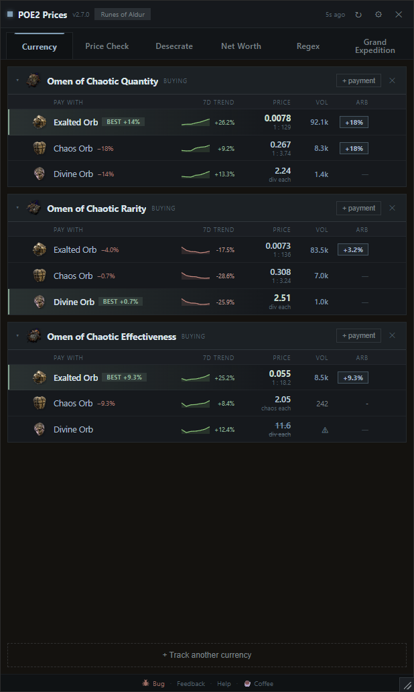
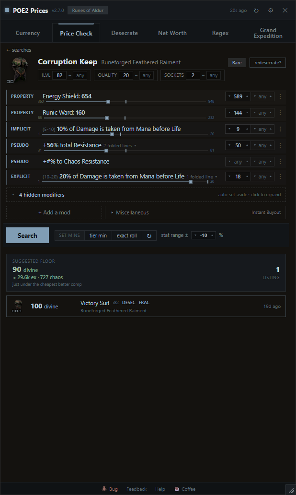
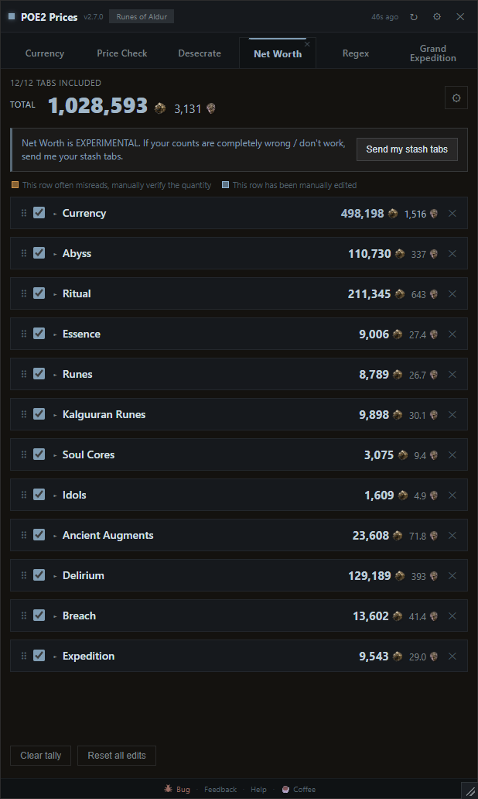
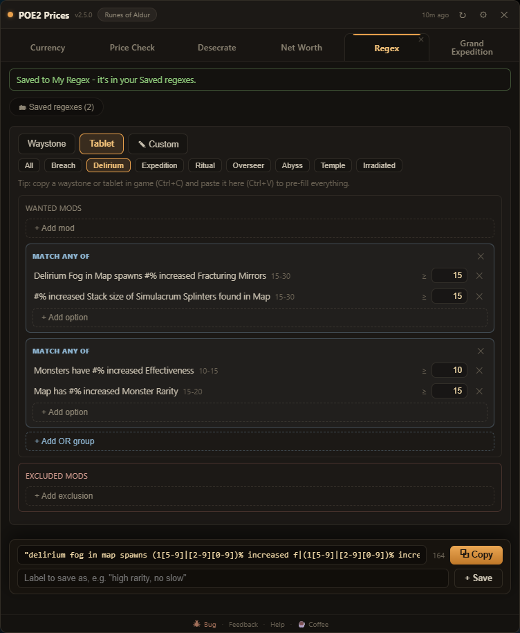
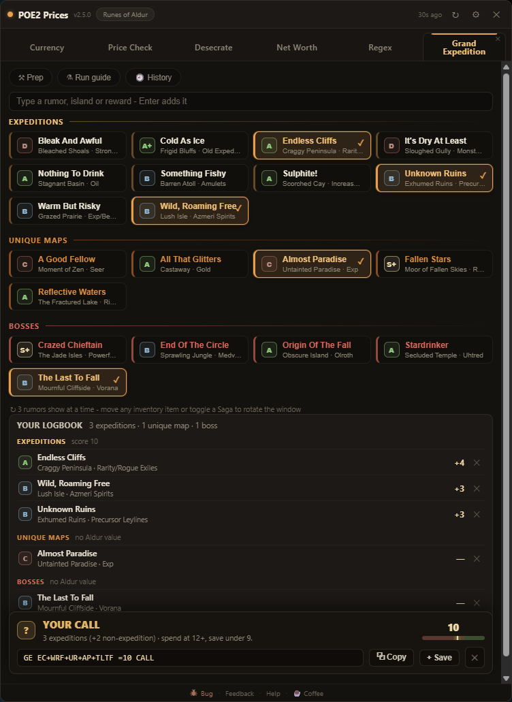
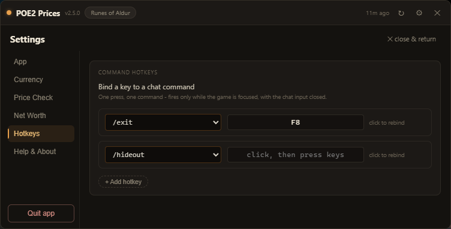

POE2 Overlay
A Path of Exile 2 overlay for live currency exchange rates, item price checks against live trade listings, a Desecrate EV calculator, a stash Net Worth calculator, a stash-search regex builder, and a Grand Expedition planner.
↓ Download for WindowsFree & open source · one-click install · ~95 MB · no account, no game hooks
Unsigned build: if SmartScreen appears, choose "More info → Run anyway".
Linux is a new experimental AppImage - runs under XWayland automatically. Report anything odd.
Industry, a second theme
Steel blue theme - Same layout, same rough brightness & contrast, one hue instead of six, square corners instead of round, flat fills instead of gradients, and no glow.
- Switch in Settings → App → Theme. Takes effect immediately, no restart.



Prices your item by its stats, not its exact mod text
Hover an item in game and press Ctrl+F: it is parsed, filtered, and priced against live listings. How it searches:
- Fungible added-damage rolls match across elements - your fire+lightning glove is comparable to a fire+cold one.
- Resistances fold into a pseudo total (with an empty chaos pseudo when chaos is present), exactly like the trade site's own pseudo stats.
- Item level, quality and Augmentable Sockets are range filters in the header, defaulted to your item, so a 2-socket item is not priced against 1-socket junk.
- Catalyst quality, weapon DPS, and Runic Ward are all accounted for.
- A Suggested floor anchored on the cheapest genuine comparable - for weapons, scaled by how your DPS compares - so a mispriced outlier doesn't set your price.

Every comp compared to your item, line by line
Comparing near-identical items usually means reading two mod lists and doing the math by hand. Hover a result and it lays the comparison out:
- Every shared mod shows a green +X when your roll wins, red −X when the listing beats you.
- Quality, the defence totals (ES / Armour / Evasion / Runic Ward), Total Resistance and Sockets are totalled next to yours - no adding up rolls by hand.
- Crafted, desecrated, and fractured lines use the game's own colours, so you can see how a comp was made.

Is re-rolling a desecrated mod with Omens of Light worth it?
Re-rolling a desecrated slot is hard to price out - odds, bones, omens, annulments and echoes all stack up. The Desecrate tab works out the expected value for each route.
- Tick the outcomes you'd keep and the worst tier you'd accept; each is weighted by its real spawn chance.
- It prices your item as it stands and with a hit, autofills costs from live rates, and compares the Preserved and Ancient routes.
- Expected bones, expected cost, and net EV per route - ending in a plain verdict: worth it, or not.

Live exchange rates, trends, and arbitrage
Press F6 and prices float over your game. Build buckets - a currency you want to buy, priced in every currency you'd pay with.
- Rates from GGG's official Currency Exchange - real executed trades - topped with the live order book for the pairs on screen.
- A green BEST badge marks the cheapest way to buy each thing; the other rows show how much more they cost.
- A green arb % flags profitable trade loops - hover for the route step by step, pin it, copy it.
- 7-day sparklines with hoverable history; type your own rate to override any pair.

Total up a stash tab from a screenshot
Open a currency tab in game and press F7. The app screenshots it, reads the item counts on your PC, prices each one, and keeps a running grand total across every tab you add.
- Reads the currency tabs: Currency, Abyss, Ritual, Essence, all five Rune subtabs, Delirium, Breach and Expedition.
- Grand total in Exalted and Divine, with a Mirror count once you're rich enough for it to matter.
- Toggle any tab or any row in or out of the total; drag tabs to reorder, or keep duplicates of a tab as separate rows.
- Prices come from the same live data as the rest of the app - the screenshot never leaves your machine.
- It's not perfect - some icons hide the number - so flip on the confidence % and edit any count inline when a read looks off.

Build stash-search regex without learning regex
The in-game search box takes regex - writing it by hand is the hard part. Pick what you want instead:
- Pick mods for waystones or tablets, set a minimum (each mod shows its real roll range), add exclusions for the mods you hate - the regex builds itself.
- Thresholds catch every qualifying roll: a "rarity 80+" pattern also matches +100% and up, where hand-written ones quietly miss.
- Copy a waystone in game and paste it on the tab - its mods pre-fill the builder.
- Save regexes under your own labels into buckets: one click copies, ready to paste into the search box. Hand-written regex welcome too.

Spend the Aldurs, or save them?
Tap the rumors you see in Uncharted Waters and the tab reads your logbook back to you - every island named, rated, and totalled into one call:
- SPEND / SAVE / YOUR CALL, from community island ratings - only expedition slots count toward the score, and under 3 expeditions is a no regardless.
- Type-to-pick: type a rumor, island or reward, press Enter, keep typing - the roster builds hands-on-keyboard.
- A compact map-note tag forms live (
GE CAI+SUL =13 SPEND) - paste it on your atlas as a note, and paste it back later to rebuild the roster. - The prep guide shows the tablets and waystone as in-game item windows - the mods to buy for, with trade-site links - plus a rune tier list and a chain tracker for the run itself.

One key, one command - and a tab bar you arrange
Two quality-of-life additions that stay inside GGG's rules:
- Bind keys to chat commands - /hideout, /leave, /remaining and more, or type your own like /itemfilter Strict. One press sends one command, only while the game is focused. Destructive commands are blocked.
- Drag the tabs into whatever order you like, and hide the ones you don't use with their ✕ - Desecrate, Net Worth, Regex and Grand Expedition are all optional; turn them back on in Settings any time.

Русский · Português · Deutsch · Français · Español
The app runs in Russian, Brazilian Portuguese, German, French or Spanish, and price checks items copied from those clients. Settings → App → Language - one setting covers the app and the item reader.
Currency and item names come from the game's own text, so they match what your stash says.
How it works & FAQ · Changelog · Roadmap · Privacy · Source & issues on GitHub
Verify your download
Only download from this page or the GitHub releases. To confirm your installer is authentic,
compare its SHA-256 hash against checksums.txt attached to the
latest release:
certutil -hashfile "POE2-Currency-Overlay-Setup.exe" SHA256
If the hashes differ, the file is not from us - delete it.